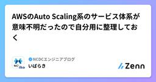

NCDCエンジニアブログのフィード
https://zenn.dev/p/ncdc
NCDC株式会社( https://ncdc.co.jp/ )のエンジニアチームです。 募集中のエンジニアのポジションや、採用している技術スタックの紹介などはこちら( https://github.com/ncdcdev/recruitment )をご覧ください！ ※エンジニア以
フィード

Azure Cosmos DBをDynamoDBと比べてみる
NCDCエンジニアブログのフィード
AzureのCosmosDB[1]って使いやすいなぁと個人的に思っているので、AWSのDynamoDBとの比較を個人の感想レベルで記載したいと思います。 CosmosDBが使いやすいと思う点 全ての項目にインデックスを付けられる何と言ってもCosmosDBが扱いやすい点はこれでしょう。DynamoDBで多くの人が血を吐いたセカンダリインデックスなどというものは不要です。CosmosDBはデフォルトで全ての項目にインデックスが付きます。つまり、デフォルトで全ての項目でソートや絞り込みが可能です。これはDynamoDBでは出来ないことであり、効率面とかコストとか色々意見はでるとは...
2日前

Amazon Bedrockのファインチューニングの使いどきがわからなかったので自分なりに整理してみた 2
2
NCDCエンジニアブログのフィード
はじめにLLM（大規模言語モデル）が事前に学習していない情報を生成内容に反映させたい場合、コスト効率や時間の観点から、ファインチューニングではなくてまずRAGからやった方が良いみたいなことをよく聞きます。よく聞くのですが、じゃあRAGからやったとしてどういう状況になればファインチューニング使うの？と疑問が浮かび、そういったことをここにまとめることにしました。以下の動画を主に参考にしてまとめました。ただ、以下の動画内でもある通り、ファインチューニングの使いどきに明確な答えはないとのことで、本記事が必ずしも正解ということではないことをご承知おきください。AWS re:Invent ...
5日前

サードパーティアクションはSHAで指定すれば安心？残念ながら、いいえ 1
NCDCエンジニアブログのフィード
TL;DRSHAで指定されたアクション自体がタグで別のアクションを呼び出していたら、その呼び出し先は呼び出した時点のタグの向き先になるためタグ指定をしていないcompositeアクションはSHA指定で安全（ランタイムでevalしていない前提の上で）nodeやdockerタイプのアクションはSHA指定で安全2025/3/15に、GitHub Actionの有名なサードパーティアクションが侵害される事件がありましたhttps://semgrep.dev/blog/2025/popular-github-action-tj-actionschanged-files-is-co...
6日前

AWSのAuto Scaling系のサービス体系が意味不明だったので自分用に整理しておく
NCDCエンジニアブログのフィード
AWS Auto Scaling と Application Auto Scaling と EC2 Auto Scaling って別物なの？というはなしです。 きっかけDynamoDBのオートスケールは、実はDynamoDBに直接付属する機能ではなく Application Auto Scaling というサービスらしいと聞いたので、調べてみることにしました。https://docs.aws.amazon.com/ja_jp/autoscaling/application/userguide/what-is-application-auto-scaling.html 調べてみ...
7日前

Bedrock AWS SDK経由でClaude 3.7 Sonnetを呼び出す
NCDCエンジニアブログのフィード
要点BedrockのAWS SDK経由でClaude 3.7 Sonnetを呼び出すときは、InvokeModelに推論プロファイルIDus.anthropic.claude-3-7-sonnet-20250219-v1:0を指定する必要があるモデルIDであるanthropic.claude-3-7-sonnet-20250219-v1:0を指定しても実行できないBedrockが用意した推論プロファイルIDを使用して呼び出す場合、複数のリージョンのうちいずれかに処理の実行が振り分けられる 挙動の詳細挙動を確認したのは、AWS SDK for JavaScript...
11日前
生成AI時代のアジャイル開発の在り方についての考察
NCDCエンジニアブログのフィード
「生成AI時代のアジャイル開発はどのようにあるべきか」について、生成AIに問いかけながら考察を進めました。 生成AIの見解上記の問いを生成AIに投げかけたところ、以下のような回答が得られました。生成AI時代のアジャイル開発のあり方 生成AI時代のアジャイル開発のあり方生成AI時代のアジャイル開発は、AIを積極的に活用しながら、より柔軟かつ高速な開発を実現する必要があります。従来のアジャイル開発の原則は変わらないものの、AIを組み込むことで、プロセス、役割、スキルセットが進化します。 1. AIを活用したアジャイルの進化 (1) AI駆動のユーザーストーリー作成...
12日前
GitHub Copilotがプルリクを勝手にレビューしてくれる設定を広めたい
NCDCエンジニアブログのフィード
はじめに最近GitHubでプルリクのレビューアーにCopilotくんをアサインすると、AIがレビューしてくれるようになりました。アサインしてしばらく待つとレビューを付けてくれます。今回はCopilotくんの指摘はなかったようです。さて、この機能は非常に便利なのですが、毎回アサインするの面倒くさいですしプルリクを出す人によってはアサインしなかったり忘れたりするのはイマイチなので、勝手にアサインして毎回レビューしてもらう設定にしちゃいましょう。という記事です。GitHub Copilotは定額なのでなるべく使いまくったほうが得ですよね！ 結論を簡単に書くとルールセット...
17日前
tasklist が廃止されるので sub-issue に移行しよう
NCDCエンジニアブログのフィード
Github の tasklist が 2025/4/30 で廃止されるようです。個人的には使いやすかったのでザンネン...The private preview feature, tasklist blocks, will be retired on April 30, 2025. Your feedback from the private preview has been invaluable, helping us shape the release of sub-issues, the replacement for tasklist blocks.https://g...
19日前
社内エンジニアの技術記事が数倍に増えたNCDCの施策
NCDCエンジニアブログのフィード
私が所属するNCDCは2月末が期末だったりします。なので多くの会社より一足先に2024年度が終了しました。本日から新年度ということもあり、2024年度のZennのPublicationへの投稿を振り返ってみました。https://zenn.dev/p/ncdcPublicationの統計ダッシュボード(課金機能)から、2024年度(2024年3月〜2025年2月)の投稿数を確認してみたところ、136記事！多くないですか？NCDCのエンジニアの数って25名程度ですよ。エンジニア以外が投稿した記事も数件ありますが、それを加味しても1人あたり平均5件以上投稿しています。ZennのP...
22日前
next devのオプションを見てみる
NCDCエンジニアブログのフィード
はじめにreact+viteで開発していたときにローカル環境でhttpsで起動するためにわざわざ証明書と鍵を作っていました。それがnextjsだと起動時のコマンドに --experimental-httpsオプションをつけるだけでできたのが便利で、他にどんなオプションがあるのか気になって調べてみました。 オプション --turbopackvercelが開発した、javascript, typesciptのビルドに最適化したバンドラーであるturpopackを有効化するオプションです。Bunでnextjsアプリを始めるとデフォルトでpackage.jsonにのscrip...
25日前
ウォーターフォール組織でも実践できるアジャイル開発のエッセンス
NCDCエンジニアブログのフィード
はじめにアジャイル開発は、変化の激しい現代において有効な開発手法として注目されています。しかし、アジャイル開発をしてみたくても、企業としてウォーターフォール型の開発手法を推奨しているため、導入が難しいと思われている方もいらっしゃるのではないでしょうか？本記事では、ウォーターフォール型の組織でも取り入れられるアジャイル開発のエッセンスについて解説しますので、Be Agileしていだければと思います。 ウォーターフォール型組織における課題 1. 変化への対応が難しいウォーターフォールでは、開発の初期段階で要件を確定し、設計・開発・テストと段階的に進めます。そのため、途中...
1ヶ月前
google mapのコンパスみたいな挙動をwebで
NCDCエンジニアブログのフィード
はじめにreactでgoogle mapのコンパスみたいな、中心となる座標からドラッグで回転とデバイスの傾きで回転を実装しました。デバイスの回転検出にはdeviceOrientationを、描画にはreact-konvaを使用しています。 コード"use client";import { useState, useRef, useEffect } from "react";import { Group, Layer, Stage, RegularPolygon } from "react-konva";export default function Home() {...
1ヶ月前
Amplify + Next.js 30秒以上のサーバ処理はタイムアウトとなる
NCDCエンジニアブログのフィード
要点Amplify + Next.js(App Router)でフロントから呼び出すサーバ処理が30秒以上の場合、リクエストは504 Gateway TimeoutエラーとなるServerActionsとAPI Routesにおいて確認2025/02現在、30秒の上限を変更することはできない時間のかかる処理をAmplify外に移管し、ポーリング処理で状況を確認することで回避可能 該当Issueタイムアウトの時間を引き上げる要望Issueが、AmplifyのGitHubリポジトリ上で作成されています。https://github.com/aws-amplify...
1ヶ月前
deepseekをローカルで試して比較してみる
NCDCエンジニアブログのフィード
はじめに生成aiでの入力データは学習に使われる可能性があるので機密データやコードは入力しない方がいいと言われます。そこで、モデルが軽量でオープンソースなことで話題となっているdeepseekが出たのでローカルで試しに動かしてみました。 動かし方ollamaをインストールします。https://ollama.com/yuuuu280@mac ~ % ollama -v ollama version is 0.5.7あとはollama run モデル名で動かせます。1行もコード書かず試せるのはすごい。ollama run deepsee...
1ヶ月前
GitHub Copilot Agentを使う為、普通のVSCodeからInsidersに移行してみた
NCDCエンジニアブログのフィード
GitHub CopilotのエージェントについてGitHub Copilotにエージェントが来ましたね。https://github.blog/jp/2025-02-07-github-copilot-the-agent-awakens/GitHub Copilotのエージェントとは何かというと、GitHub公式で使えるCline的なやつですね。これの何が凄いって、GitHub Copilotの料金内で使えることですね。Clineって料金が基本的に青天井じゃないですか。個人で使うと破産するし、下手に会社で使うと怒られるじゃないですか高いから。安く使おうとモニョモニョすると...
1ヶ月前
ReactでWindowsアプリ作るための手法について比較してみる
NCDCエンジニアブログのフィード
前置き既存のReact SPAアプリの一部を流用してWindowsのネイティブアプリ化したいという要望があったため、まずはその方法について調査しました。 ネイティブアプリ開発の前提知識ほとんどなし 流行流行りを調べてみました。State of Javascript 2024 のMobile & Desktopのランキングだと、1位がReact Native2位がElectron 3位がExpoでした。Desktopアプリ用のフレームワーク限定のランキングではないので、純粋なDesktopアプリの開発フレームワークに絞るとElectronが実質1位でしょうか...
1ヶ月前
1時間のスプリントでスクラムを回してみた
NCDCエンジニアブログのフィード
NCDCのコンサルタントチームでは週1回の頻度で、スクラムの勉強会をスクラムをしながら開催しています。初学者はスクラムを理解することを、経験者はより深くスクラムを理解することを目的として行っており、スクラムの基本を体験できる実践的なプロジェクトを通して皆で学習を進めます。スクラム開発の中心には、短期間のスプリントを通じて継続的な価値提供を目指すプロセスがあります。一般的には1～4週間程度のスプリントが採用されますが、「もしスプリントを1時間に短縮したらどうなるのか？」という疑問から実験を行いました。この記事では、その実験の背景、プロセス、得られた発見について共有します。 なぜ1時...
1ヶ月前
[Bedrock]ナレッジベースへの直接取り込みの使い所
NCDCエンジニアブログのフィード
ナレッジベースへの直接取り込みの使い所 はじめにAmazon Bedrockのナレッジベース機能が強化され、新たにIngestKnowledgeBaseDocuments APIが追加されました。https://aws.amazon.com/jp/blogs/aws/new-apis-in-amazon-bedrock-to-enhance-rag-applications-now-available/これにより、データを事前にデータソースに同期することなく、直接ナレッジベースに取り込むことが可能になりました。本記事では、このナレッジベースへの直接取り込みの使い所について紹...
1ヶ月前
GitHub Actionsでs3へのデプロイをCI/CD
NCDCエンジニアブログのフィード
やりたいことnextjsで書いた静的サイトのコードをgithubにpushする。pushした内容を静的HTMLに出力する。出力したファイルをs3に格納する。コンテンツを確認したら更新されているこの1,2,3,4の流れを自動でやってくれるように設定していきます。s3バケットの作成とcloudFrontの経由は設定済みとして割愛します。 やってみるnextConfigの設定まずnext.config.jsファイルのnextConfigにoutput:"export"を追加します。これでビルド時に静的HTMLをoutディレクトリに作ってくれます。/** @ty...
1ヶ月前
MotoでLambdaコードからLambdaモックを呼び出す（Dockerなし）
NCDCエンジニアブログのフィード
はじめにこの記事では、次のコードをMotoでテストする方法を記載します。Pythonランタイム上で動作するLambda関数Lambda関数内で、別のLambda関数をboto3経由で呼び出す MotoとはMotoは、Boto3をモックするパッケージです。Boto3はPythonのAWS SDKの名称であり、MotoはBoto3が対応する多くのAWSサービスをモックできます。 Lambda関数の実装まずは、テスト対象となるLambda関数を実装します。今回は以下のコードを使用します。このLambdaコードでは、別のLambdaを呼び出した結果からdataを抽出...
2ヶ月前